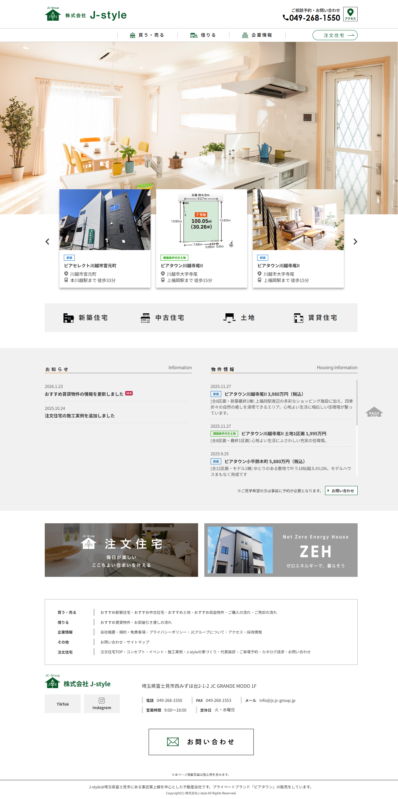
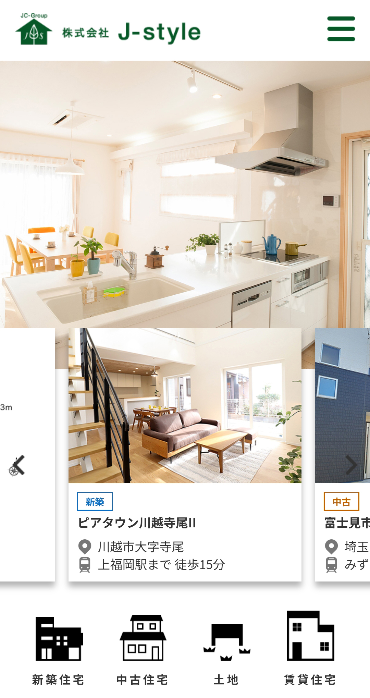
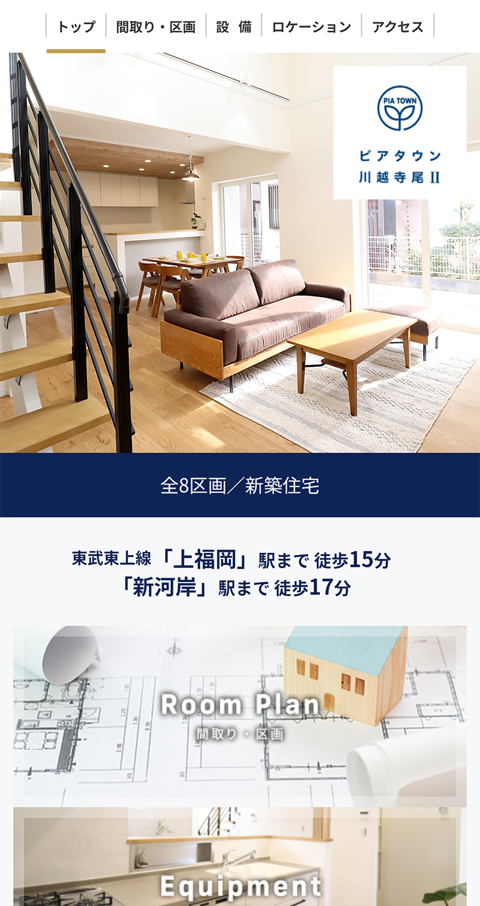
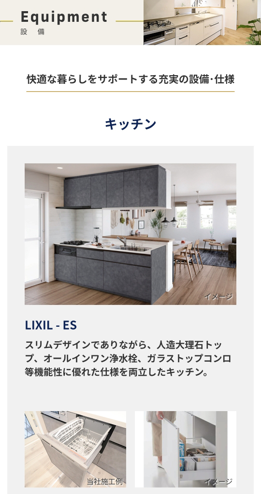

株式会社 J-style
- Category
- 不動産サービスサイト
- URL
- https://js.jc-group.jp/
- Year
- 2019年
- Project
- WEBサイトリニューアル・運営
- Part
- 情報設計 / 画面設計 / UIデザイン / フロントエンド実装
- Tool
- Photoshop / Illustrator / Dreamweaver / HTML / CSS / Javascript
不動産サービスサイト制作。情報量の多い企業サイトを、ユーザーが迷わず理解できる構成へ再設計。 情報設計からデザイン・実装まで一貫して担当。




背景・課題
不動産会社のコーポレートサイト（約40ページ）を設計からデザイン、実装まで一貫して担当。 賃貸・売買・注文住宅の3サービスを展開する構成。
既存サイトは情報量が多く、サービス導線が整理されていない状態。 ユーザーが目的の情報へ到達しづらい構造だった。
サービス軸を再定義し、目的別に迷わず進める情報構造へ再設計。 社内更新を前提とした運用しやすい構造へ改善。
制作フロー
情報設計
3サービスの関係性を整理し、
ユーザー導線を再構築。
ワイヤーフレーム
各サービスの優先順位を明確化し、
構造を設計。
デザイン設計
安心感を重視した配色とUI設計を実施。
実装
レスポンシブ対応と表示速度を考慮し構築。
意識したこと
情報の優先順位整理
3サービスの関係性を明確化。 目的別に迷わない導線を設計。
テンプレート化
一覧・詳細を共通フォーマット化。 統一感と拡張性を確保。
共通パーツ設計
header・footerを共通化。 更新効率を向上。
レスポンシブ設計
情報量が多くても崩れない構造を設計。
成果
- 3サービス導線を整理し、サイト理解度を向上
- テンプレート化により更新工数を削減
- 公開後、問い合わせ増加に貢献
ふりかえり・改善点
情報設計から実装まで一貫して担当したことで、 サービス構造を整理する重要性を改めて実感した案件でした。 特に導線再設計は、サイト全体の分かりやすさ向上に寄与しました。
一方で、公開後のユーザー行動データを十分に分析するところまで踏み込めなかった点は課題です。 今後は改善施策の効果検証まで含めた設計を行っていきたいと考えております。